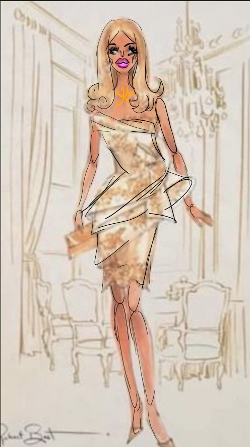

I want this text to be blue like botox 💙
meet Kim K! She's our patient!
let's begin plastic surgery!! (i am very qualified and definitely should be doing this)
I want this text to be very BIG like Kim K's lips
but i want this text to be really tiny like her brain 💖
i want this text to be centered like her altered nose
this font is changed. liker Kim's before and after.
i want this text to be medium, right-aligned, pink, and a different font like her lip job
i want this text to be foul orange like the vast emptiness of her mind (:
this is the sound of Kim's brain
hi. my name is Kim. I am pretty and rich too!
hi. my name is Kim. I am pretty and rich too!
there's really not much to see here. moving on!
give this line a selector and add finishing touches (an unholy amount of lip filler) to her face
tada!
first, choose a dress
now fix her hair!
now fix her face ♥
hmmm. she looks a little unnatural. but that's how she likes it! this is Kim K!
this is her before brain size and this is her after brain size